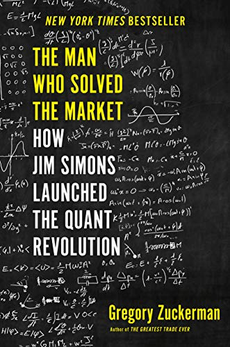
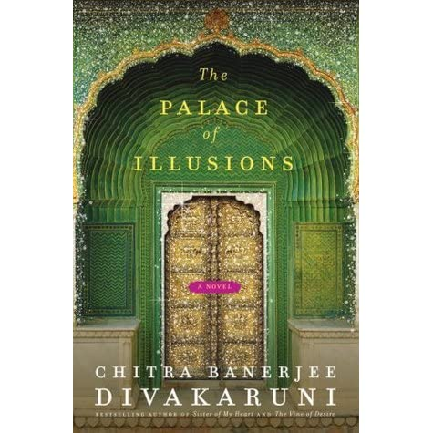

Shoe Dog by Phil Knight is an honest tale of what it takes to succeed in a business. The author gives quite a refreshing and candid memoir about the Nike empire and its path to success. What makes it different from the common stories about entrepreneurs is Knight's messy and chaotic journey with endless struggles and sacrifice. There are no tips or checklist, because Knight is not directly trying to teach its audience but an honest review on his hardships and accomplishments along the way.

The Man who Solved the Market by Gregory Zuckerman is about Jim Simon's rise to success and wealth from tapping into his math genius to making amazing gains in stock market investment. If you are interested in quant investing and Wall-Street, and want to know more about the journey of 'one of a kind' technologies developed by Renaissance Technology, this book is for you. I enjoyed reading the political factions within the company as well.

The Palace of Illusions by Chitra Banerjee Divakaruni is a novel take on the age-old saga of Mahabharata narrated by Princess Panchaali. She is a fiery female redefining for us a world of warriors, gods, and fate. It is a refreshing read through Draupadi's gendered lens. The story is written so masterfully by sticking to the script of the original epic. This book is immensely intriguing to read, so much so, that I could not stop myself from finishing it in one reading.